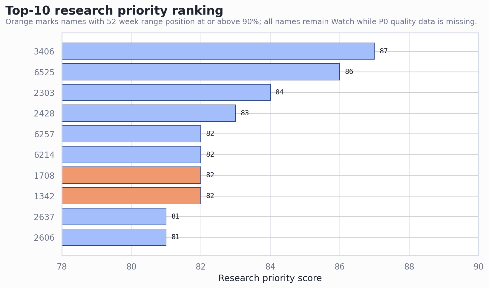
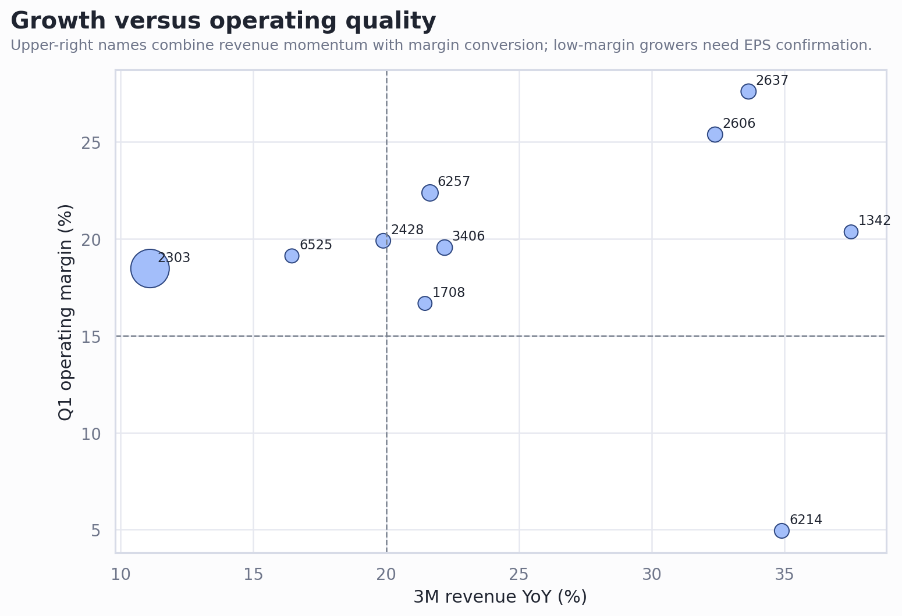
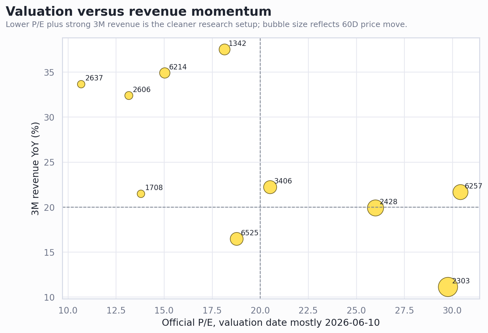
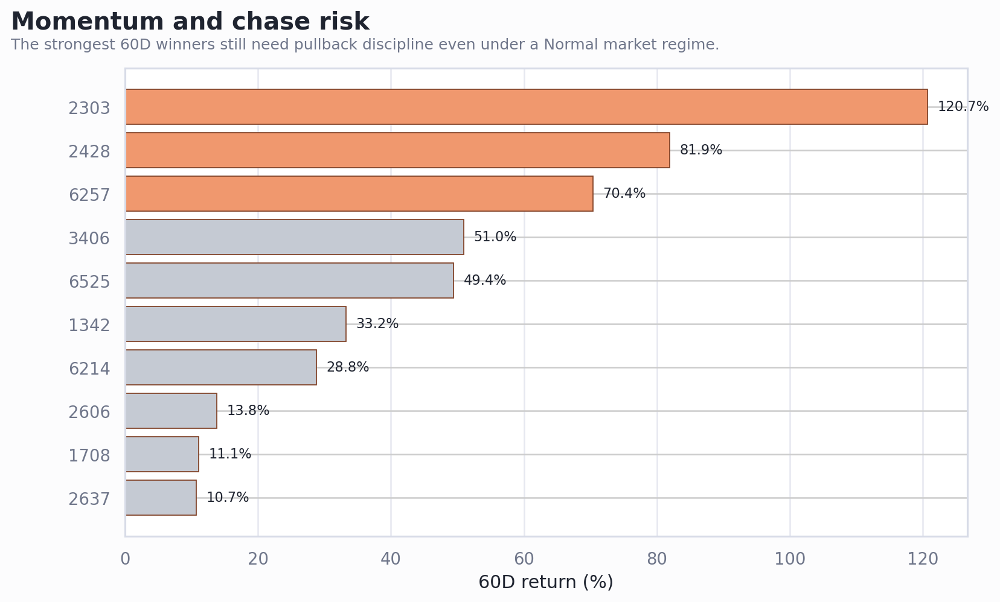

tw_stock_candidates_20260613 前 10 名個股詳細分析
產出日期：2026-06-13
分析層級：研究優先與個股深度追蹤，不構成個人化財務建議或買賣指令。
市場狀態：Normal；2026-06-12 加權指數 +2.36%，未觸發單日風險閘門。現階段前 10 名仍維持 Watch / Theme Watch，不直接升級為可交易清單。
Executive Summary
- 前 10 名是研究順序，不是買進順序。 候選分數來自官方價格/估值、月營收、3M rolling 營收、Q1 margin/EPS、日價趨勢與融資融券 proxy；但 OCF/NI、應收、存貨、法人籌碼、借券與歷史估值 percentile 仍未補齊。
- 最值得先做完整版的是 6525、6214、2606、2637。 這幾檔的估值/品質或追價風險較可控；但每檔仍有需要補的關鍵資料。
- 3406、2428、2303、1342、6257 的分數高，但追價風險更明顯。 它們或已接近 52 週高位，或 60D 漲幅大，或營收轉 EPS 尚未完全確認。
- 持倉閘門偏保守。 本地持倉紀錄顯示剩餘 BDC、GEV 曝險仍集中，新買台股空間有限；所以本輪最佳動作偏向排程研究與等待驗證點。
前 10 名快速排序
| Rank | 代號 | 公司 | 產業 | 結論 | 分數 | 3M營收YoY | 營益率 | P/E | 60D | 52W位置 |
|---|---|---|---|---|---|---|---|---|---|---|
| 1 | 3406 | 玉晶光 | 光電 | 不追，列第一優先追蹤 | 87 | 22.2% | 19.6% | 20.5 | 51.0% | 75.3% |
| 2 | 6525 | 捷敏-KY | 半導體 | 半導體中較均衡，保留深度分析 | 86 | 16.4% | 19.1% | 18.8 | 49.4% | 82.8% |
| 3 | 2303 | 聯電 | 半導體 | 大型主題 Watch，不追急漲 | 84 | 11.1% | 18.5% | 29.8 | 120.7% | 80.9% |
| 4 | 2428 | 興勤 | 電子零組件 | 高品質 Watch，等待回檔或橫盤 | 83 | 19.9% | 19.9% | 26.0 | 81.9% | 84.4% |
| 5 | 1342 | 八貫 | 其他 | 基本面強，但追價風險最高之一 | 82 | 37.5% | 20.4% | 18.1 | 33.2% | 100.0% |
| 6 | 1708 | 東鹼 | 化學工業 | 便宜成長候選，但先等營收止滑 | 82 | 21.5% | 16.7% | 13.8 | 11.1% | 90.5% |
| 7 | 6214 | 精誠 | 資訊服務 | 營收強、margin 待確認 | 82 | 34.9% | 4.9% | 15.0 | 28.8% | 72.0% |
| 8 | 6257 | 矽格 | 半導體 | 半導體動能 Watch，等估值消化 | 82 | 21.6% | 22.4% | 30.4 | 70.4% | 87.7% |
| 9 | 2606 | 裕民 | 航運業 | 低估值循環 Watch，可做基本面驗證 | 81 | 32.4% | 25.4% | 13.2 | 13.8% | 81.0% |
| 10 | 2637 | 慧洋-KY | 航運業 | 低 P/E 航運 Watch，先驗證運價 | 81 | 33.6% | 27.6% | 10.7 | 10.7% | 82.4% |
視覺證據




共同判斷
資料時點要拆開看。 候選表的價格多數已改用 2026-06-12 日價歷史；官方 P/E/P/B/殖利率仍多以 1150610 / 2026-06-10 估值檔為準，所以 PE/PB 尚未重估到 6/12 收盤。
共同硬缺口是財報品質。 前 10 名多數 P0 已取得 4/5，但仍缺 OCF/NI、應收帳款與存貨。這會影響所有低 P/E、高成長與題材轉財報判斷。
Normal regime 下，強勢仍不等於可追。 2428、2303、1342、6257 等動能很強，但 52 週位置或 60D 報酬已高；需要用下一次月營收、Q2 margin、法人/融資與回測均線來確認。
個股詳細分析
1. 3406 玉晶光 - 不追，列第一優先追蹤
一句話結論： 成長、獲利與題材都強，但 5 月營收月減與股價仍在高位；即使 market regime 為 Normal，也不適合用排名第一直接追價。
| 模組 | 核心數字 | 判斷 |
|---|---|---|
| 價格/時點 | 候選價 662.0（價格日 2026-06-12）；日價歷史參考 662.0（2026-06-12）；差異 0.0% | 估值日與價格日不同時，估值只能視為估值日參考 |
| 成長 | 月營收 YoY 30.2%、MoM -29.6%、3M YoY 22.2%、加速度 15.9 | 3M 營收 YoY 仍為雙位數、Q1 營益率接近 20%，光電產業在候選池與產業排序都靠前。 |
| 品質 | Q1 毛利率 33.6%、營益率 19.6%、淨利率 14.5%、EPS 7.90 | 缺 OCF/NI、應收與存貨，品質分不能升級為完整 A-List |
| 估值 | P/E 20.5、P/B 2.92、殖利率 2.5%、推算 TTM EPS 32.26 | 官方估值未重估到 6/12 最新價，歷史 percentile 與同業估值仍待補 |
| 股價/籌碼 | 20D 18.2%、60D 51.0%、52W 位置 75.3%、融資使用率 7.2% | 趨勢為 uptrend_confirmed；即使 market regime 為 Normal，越接近高位越需要等回測 |
Bear case first： 5 月營收 MoM -29.6%，最新月低於 3M 均值約 20%；若後續月營收不能回升，市場可能把高分視為落後訊號。
下一個驗證點： 下一個月營收需回到 3M 均值附近，且股價守住 20D/50D 均線後再評估。
已知缺口/風險： 月營收MoM明顯下滑；最新月營收低於3月均值；OCF/NI、應收、存貨仍待補；股價歷史日與候選價格日不同；價格日與估值日不一致
2. 6525 捷敏-KY - 半導體中較均衡，保留深度分析
一句話結論： 估值、股利、營收與 margin 的平衡感好，是前十名裡較像基本面研究標的的一檔。
| 模組 | 核心數字 | 判斷 |
|---|---|---|
| 價格/時點 | 候選價 125.5（價格日 2026-06-12）；日價歷史參考 125.5（2026-06-12）；差異 0.0% | 估值日與價格日不同時，估值只能視為估值日參考 |
| 成長 | 月營收 YoY 19.0%、MoM 1.6%、3M YoY 16.4%、加速度 7.0 | P/E 18.8、殖利率 4.4%、Q1 營益率 19.1%，3M 營收 YoY 16.5% 且正成長月數完整。 |
| 品質 | Q1 毛利率 26.1%、營益率 19.1%、淨利率 15.4%、EPS 1.62 | 缺 OCF/NI、應收與存貨，品質分不能升級為完整 A-List |
| 估值 | P/E 18.8、P/B 3.35、殖利率 4.4%、推算 TTM EPS 6.68 | 官方估值未重估到 6/12 最新價，歷史 percentile 與同業估值仍待補 |
| 股價/籌碼 | 20D 7.7%、60D 49.4%、52W 位置 82.8%、融資使用率 5.5% | 趨勢為 uptrend_confirmed；即使 market regime 為 Normal，越接近高位越需要等回測 |
Bear case first： 6/12 參考收盤已明顯高於候選表價格，短線追價後安全邊際縮小；半導體封測/後段景氣仍需同業確認。
下一個驗證點： 補 OCF/NI 與應收/存貨後，若 6 月營收延續且價格回測不破 20D 均線，可優先升級到個股完整版。
已知缺口/風險： OCF/NI、應收、存貨仍待補；股價歷史日與候選價格日不同；價格日與估值日不一致
3. 2303 聯電 - 大型主題 Watch，不追急漲
一句話結論： 聯電流動性與主題都強，但 60D 報酬極高，P/E 已不低；本輪更像強勢半導體 beta，而不是低估值候選。
| 模組 | 核心數字 | 判斷 |
|---|---|---|
| 價格/時點 | 候選價 133.5（價格日 2026-06-12）；日價歷史參考 133.5（2026-06-12）；差異 0.0% | 估值日與價格日不同時，估值只能視為估值日參考 |
| 成長 | 月營收 YoY 17.8%、MoM 1.2%、3M YoY 11.1%、加速度 12.9 | 營收連續改善、Q1 營益率 18.5%、市值與成交值提供進出能力，半導體族群仍在主題雷達前段。 |
| 品質 | Q1 毛利率 29.2%、營益率 18.5%、淨利率 26.5%、EPS 1.29 | 缺 OCF/NI、應收與存貨，品質分不能升級為完整 A-List |
| 估值 | P/E 29.8、P/B 3.67、殖利率 2.2%、推算 TTM EPS 4.48 | 官方估值未重估到 6/12 最新價，歷史 percentile 與同業估值仍待補 |
| 股價/籌碼 | 20D 23.6%、60D 120.7%、52W 位置 80.9%、融資使用率 5.6% | 趨勢為 uptrend_confirmed；即使 market regime 為 Normal，越接近高位越需要等回測 |
Bear case first： 60D +120.7% 使 de-rating 風險偏大；若晶圓代工報價、稼動率或 margin 不跟上，P/E 29.8 容易被壓縮。
下一個驗證點： 需要補近兩季 margin 趨勢、法人籌碼與估值 percentile；價格至少要消化急漲後再看。
已知缺口/風險： OCF/NI、應收、存貨仍待補；股價歷史日與候選價格日不同；價格日與估值日不一致
4. 2428 興勤 - 高品質 Watch，等待回檔或橫盤
一句話結論： 營收與獲利品質漂亮，融資使用率不高；問題是 60D 報酬已很高，現在主要是追高風險。
| 模組 | 核心數字 | 判斷 |
|---|---|---|
| 價格/時點 | 候選價 291.0（價格日 2026-06-12）；日價歷史參考 291.0（2026-06-12）；差異 0.0% | 估值日與價格日不同時，估值只能視為估值日參考 |
| 成長 | 月營收 YoY 29.7%、MoM 0.6%、3M YoY 19.9%、加速度 18.5 | 3M YoY 約 20%、營收加速度正向、Q1 毛利率與營益率都接近 34%/20%，資產負債結構也乾淨。 |
| 品質 | Q1 毛利率 34.0%、營益率 19.9%、淨利率 13.8%、EPS 2.21 | 缺 OCF/NI、應收與存貨，品質分不能升級為完整 A-List |
| 估值 | P/E 26.0、P/B 3.12、殖利率 2.1%、推算 TTM EPS 11.19 | 官方估值未重估到 6/12 最新價，歷史 percentile 與同業估值仍待補 |
| 股價/籌碼 | 20D 37.3%、60D 81.9%、52W 位置 84.4%、融資使用率 7.7% | 趨勢為 uptrend_confirmed；即使 market regime 為 Normal，越接近高位越需要等回測 |
Bear case first： P/E 26 倍不算便宜，60D +81.9% 代表很多好消息可能已反映；若電子零組件族群補跌，回撤會很快。
下一個驗證點： 等 20D 均線靠近或放量後不破前高，再看月營收能否延續正成長。
已知缺口/風險： OCF/NI、應收、存貨仍待補；股價歷史日與候選價格日不同；價格日與估值日不一致
5. 1342 八貫 - 基本面強，但追價風險最高之一
一句話結論： 八貫營收、獲利與股利都很亮眼，但 52 週位置達 100%，現在更需要等，而不是急著追。
| 模組 | 核心數字 | 判斷 |
|---|---|---|
| 價格/時點 | 候選價 117.5（價格日 2026-06-12）；日價歷史參考 117.5（2026-06-12）；差異 0.0% | 估值日與價格日不同時，估值只能視為估值日參考 |
| 成長 | 月營收 YoY 37.2%、MoM -3.4%、3M YoY 37.5%、加速度 5.5 | 3M 營收 YoY 37.5%、Q1 營益率 20.4%、殖利率 5.6%，且近 3 個月 YoY 全部正成長。 |
| 品質 | Q1 毛利率 27.2%、營益率 20.4%、淨利率 17.7%、EPS 2.08 | 缺 OCF/NI、應收與存貨，品質分不能升級為完整 A-List |
| 估值 | P/E 18.1、P/B 4.03、殖利率 5.6%、推算 TTM EPS 6.47 | 官方估值未重估到 6/12 最新價，歷史 percentile 與同業估值仍待補 |
| 股價/籌碼 | 20D 25.7%、60D 33.2%、52W 位置 100.0%、融資使用率 4.0% | 趨勢為 uptrend_confirmed；即使 market regime 為 Normal，越接近高位越需要等回測 |
Bear case first： P/B 4.03、價格在 52 週高位；若市場轉弱或單月營收不如預期，高位籌碼容易鬆動。
下一個驗證點： 等股價離開 52 週高點附近，或用下一次月營收確認高成長仍可持續。
已知缺口/風險： OCF/NI、應收、存貨仍待補；接近52週高點，追價風險較高；股價歷史日與候選價格日不同；價格日與估值日不一致
6. 1708 東鹼 - 便宜成長候選，但先等營收止滑
一句話結論： 估值與 margin 好，20D 動能也不差；主要疑點是 5 月營收 MoM 明顯下滑且價格接近 52 週高位。
| 模組 | 核心數字 | 判斷 |
|---|---|---|
| 價格/時點 | 候選價 48.0（價格日 2026-06-12）；日價歷史參考 48.0（2026-06-12）；差異 0.0% | 估值日與價格日不同時，估值只能視為估值日參考 |
| 成長 | 月營收 YoY 18.4%、MoM -22.7%、3M YoY 21.5%、加速度 13.0 | P/E 13.8、P/B 1.56、Q1 毛利率 30.6%、營益率 16.7%，3M 營收 YoY 21.5%。 |
| 品質 | Q1 毛利率 30.6%、營益率 16.7%、淨利率 17.9%、EPS 1.11 | 缺 OCF/NI、應收與存貨，品質分不能升級為完整 A-List |
| 估值 | P/E 13.8、P/B 1.56、殖利率 3.4%、推算 TTM EPS 3.48 | 官方估值未重估到 6/12 最新價，歷史 percentile 與同業估值仍待補 |
| 股價/籌碼 | 20D 18.5%、60D 11.1%、52W 位置 90.5%、融資使用率 15.2% | 趨勢為 uptrend_confirmed；即使 market regime 為 Normal，越接近高位越需要等回測 |
Bear case first： 5 月營收 MoM -22.7%、最新月低於 3M 均值 10.4%，若化工產品價格或需求轉弱，會變成 value trap。
下一個驗證點： 下一個月營收與毛利率需確認沒有轉弱，價格最好不要在 52 週高位附近追。
已知缺口/風險： 月營收MoM明顯下滑；最新月營收低於3月均值；OCF/NI、應收、存貨仍待補；股價歷史日與候選價格日不同；價格日與估值日不一致
7. 6214 精誠 - 營收強、margin 待確認
一句話結論： 精誠的營收動能與估值很好，但 Q1 營益率偏低，核心問題是營收能不能轉成 EPS。
| 模組 | 核心數字 | 判斷 |
|---|---|---|
| 價格/時點 | 候選價 145.5（價格日 2026-06-12）；日價歷史參考 145.5（2026-06-12）；差異 0.0% | 估值日與價格日不同時，估值只能視為估值日參考 |
| 成長 | 月營收 YoY 45.8%、MoM 6.3%、3M YoY 34.9%、加速度 14.3 | 3M 營收 YoY 34.9%、月營收 YoY 45.8%，P/E 15.0、殖利率 4.2%，資訊服務產業相對大盤抗跌。 |
| 品質 | Q1 毛利率 20.4%、營益率 4.9%、淨利率 6.0%、EPS 2.64 | 缺 OCF/NI、應收與存貨，品質分不能升級為完整 A-List |
| 估值 | P/E 15.0、P/B 2.05、殖利率 4.2%、推算 TTM EPS 9.67 | 官方估值未重估到 6/12 最新價，歷史 percentile 與同業估值仍待補 |
| 股價/籌碼 | 20D 19.3%、60D 28.8%、52W 位置 72.0%、融資使用率 2.3% | 趨勢為 uptrend_confirmed；即使 market regime 為 Normal，越接近高位越需要等回測 |
Bear case first： Q1 營益率 4.94%、淨利率 6.0%，若成長靠低毛利案型，P/E 低不代表便宜。
下一個驗證點： 下一季要看營益率是否改善；若 margin 上不來，就只留 Watch 不升級。
已知缺口/風險： OCF/NI、應收、存貨仍待補；股價歷史日與候選價格日不同；價格日與估值日不一致
8. 6257 矽格 - 半導體動能 Watch，等估值消化
一句話結論： 矽格的營收與 margin 不差，股價動能也強，但 P/E 已偏高，不能只用半導體復甦題材追價。
| 模組 | 核心數字 | 判斷 |
|---|---|---|
| 價格/時點 | 候選價 221.5（價格日 2026-06-12）；日價歷史參考 221.5（2026-06-12）；差異 0.0% | 估值日與價格日不同時，估值只能視為估值日參考 |
| 成長 | 月營收 YoY 23.7%、MoM 1.6%、3M YoY 21.6%、加速度 7.0 | 3M 營收 YoY 約 21.6%、Q1 毛利率 31.7%、營益率 22.4%，半導體封測復甦題材明確。 |
| 品質 | Q1 毛利率 31.7%、營益率 22.4%、淨利率 19.0%、EPS 2.10 | 缺 OCF/NI、應收與存貨，品質分不能升級為完整 A-List |
| 估值 | P/E 30.4、P/B 4.51、殖利率 2.1%、推算 TTM EPS 7.28 | 官方估值未重估到 6/12 最新價，歷史 percentile 與同業估值仍待補 |
| 股價/籌碼 | 20D 5.2%、60D 70.4%、52W 位置 87.7%、融資使用率 8.4% | 趨勢為 uptrend_confirmed；即使 market regime 為 Normal，越接近高位越需要等回測 |
Bear case first： P/E 約 30 倍、60D 漲幅高、52W 位置偏高；若 EPS 沒有上修，容易被 de-rating。
下一個驗證點： 補 OCF/NI、應收、存貨與法人籌碼；若下一次月營收與 EPS/margin 繼續上修，再升級研究。
已知缺口/風險： OCF/NI、應收、存貨仍待補；股價歷史日與候選價格日不同；價格日與估值日不一致
9. 2606 裕民 - 低估值循環 Watch，可做基本面驗證
一句話結論： 裕民是前十名中最像低 P/E 高殖利率循環股的候選，但航運景氣與運價週期會主導 EPS。
| 模組 | 核心數字 | 判斷 |
|---|---|---|
| 價格/時點 | 候選價 68.3（價格日 2026-06-12）；日價歷史參考 68.3（2026-06-12）；差異 0.0% | 估值日與價格日不同時，估值只能視為估值日參考 |
| 成長 | 月營收 YoY 41.8%、MoM -5.0%、3M YoY 32.4%、加速度 24.1 | P/E 13.2、P/B 1.43、殖利率 4.1%，3M 營收 YoY 32.4%，Q1 營益率與淨利率皆約 25%。 |
| 品質 | Q1 毛利率 32.0%、營益率 25.4%、淨利率 25.4%、EPS 1.17 | 缺 OCF/NI、應收與存貨，品質分不能升級為完整 A-List |
| 估值 | P/E 13.2、P/B 1.43、殖利率 4.1%、推算 TTM EPS 5.19 | 官方估值未重估到 6/12 最新價，歷史 percentile 與同業估值仍待補 |
| 股價/籌碼 | 20D 5.7%、60D 13.8%、52W 位置 81.0%、融資使用率 1.1% | 趨勢為 uptrend_confirmed；即使 market regime 為 Normal，越接近高位越需要等回測 |
Bear case first： 負債權益比 1.21 較高，航運盈餘可能受運價與船隊供需快速反轉；低 P/E 不能直接視為安全。
下一個驗證點： 補 BDI/運價、船隊供給與 OCF/NI，確認 EPS 不是景氣高峰後再進一步分析。
已知缺口/風險： OCF/NI、應收、存貨仍待補；股價歷史日與候選價格日不同；價格日與估值日不一致
10. 2637 慧洋-KY - 低 P/E 航運 Watch，先驗證運價
一句話結論： 慧洋-KY 有低 P/E、殖利率與 3M 營收成長，但航運股最怕景氣高峰假便宜，所以要先補運價與現金流。
| 模組 | 核心數字 | 判斷 |
|---|---|---|
| 價格/時點 | 候選價 78.5（價格日 2026-06-12）；日價歷史參考 78.5（2026-06-12）；差異 0.0% | 估值日與價格日不同時，估值只能視為估值日參考 |
| 成長 | 月營收 YoY 45.9%、MoM 10.4%、3M YoY 33.6%、加速度 11.0 | P/E 約 10.7、殖利率約 4.6%，3M 營收 YoY 約 33.6%，Q1 營益率高，融資使用率低。 |
| 品質 | Q1 毛利率 28.7%、營益率 27.6%、淨利率 27.6%、EPS 1.60 | 缺 OCF/NI、應收與存貨，品質分不能升級為完整 A-List |
| 估值 | P/E 10.7、P/B 1.13、殖利率 4.6%、推算 TTM EPS 7.34 | 官方估值未重估到 6/12 最新價，歷史 percentile 與同業估值仍待補 |
| 股價/籌碼 | 20D 4.8%、60D 10.7%、52W 位置 82.4%、融資使用率 1.6% | 趨勢為 uptrend_confirmed；即使 market regime 為 Normal，越接近高位越需要等回測 |
Bear case first： 若 BDI 或租金轉弱，營收與 EPS 會同步下修；52W 位置偏高，低 P/E 不代表追價安全。
下一個驗證點： 補 BDI/船型運價、OCF/NI 與負債結構；若月營收與運價同步走強，再進一步升級。
已知缺口/風險： OCF/NI、應收、存貨仍待補；股價歷史日與候選價格日不同；價格日與估值日不一致
下一步排程
- 先補 6525、6214、2606、2637 的 OCF/NI、應收與存貨，判斷是否能從 Watch 升為 A-List 候選。
- 對 3406、2428、2303、1342、6257 設追高保護：等 20D/50D 均線回測、月營收續強或估值 percentile 補齊後再討論。
- 補法人 5D/20D、借券與 20D 平均成交值，把「題材強」和「籌碼過熱」分開。
- 若要轉成可交易清單，需先更新持倉/台幣可用現金、單筆最大虧損、停損線與事件日曆。
Caveats and Assumptions
- 本報告沒有使用即時盤中價格；6/12 價格來自本地日價歷史快取。
- 官方 P/E、P/B、殖利率尚未重估至 6/12 收盤。
- 沒有取得外資/投信/自營、借券、歷史 PE/PB percentile、OCF/NI、應收與存貨。
- 本報告只作研究排程與風險控管，不是投資建議、買進建議或賣出建議。
Sources
| 類型 | 使用內容 | 檔案/來源 |
|---|---|---|
| 本地輸出 | 候選排序、分數、估值、營收、財務、技術、融資融券展開欄位 | `output/tw_stock_candidates_20260613.csv` |
| 本地輸出 | 2026-06-13 篩選摘要與資料限制 | `output/tw_stock_screen_report_20260613.md` |
| 本地輸出 | 日價歷史至 2026-06-12 的逐檔序列 | `data/tw_daily_price_history_by_stock.json` |
| 本地輸出 | 月營收快取與 3M rolling 訊號 | `data/finmind_month_revenue_by_stock.json`, `data/tw_revenue_3m_features_cache.json` |
| 本地輸出 | 目前持倉與交易空間限制 | `data/portfolio-current.md` |
| 官方/原始 | TWSE 行情、估值、公司基本資料、融資融券入口 | https://www.twse.com.tw/zh/ |
| 官方/原始 | TWSE OpenAPI 價格/估值/公司資料端點 | `https://openapi.twse.com.tw/v1/exchangeReport/STOCK_DAY_ALL`, `https://openapi.twse.com.tw/v1/exchangeReport/BWIBBU_ALL`, `https://openapi.twse.com.tw/v1/opendata/t187ap03_L` |
| 官方/原始 | FinMind 月營收 API | `https://api.finmindtrade.com/api/v4/data?dataset=TaiwanStockMonthRevenue` |